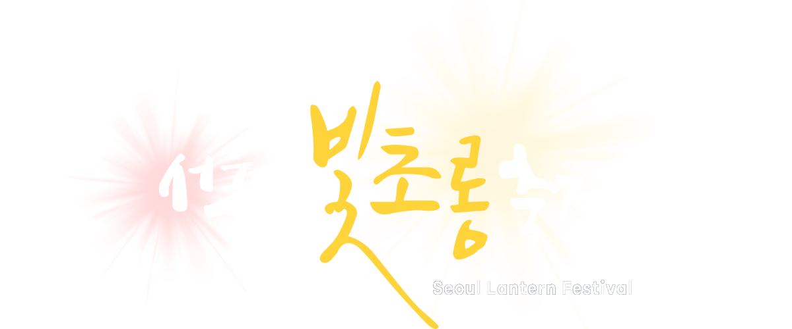
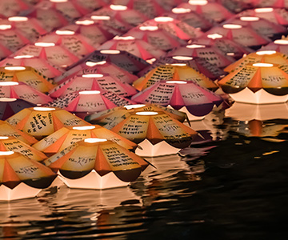
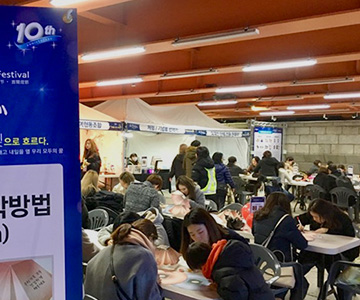
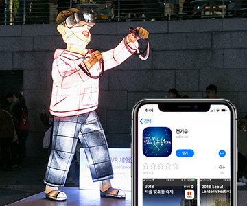

청계광장 ~ 수포교 (1.2k)
2018. 11. 02 (금) ~ 2018. 11. 18 (일)
축제 개요
2018년 11월 2일부터 2018년 11월 18일까지
청계천에서 열리는 <서울 빛초롱 축제> 는 지난 9년간
서울의 오랜 역사와 문화를 담아왔습니다.
10주년을 맞이한 이번 축제는 지나온 길을 돌아보고
새롭게 시작하는 자리입니다.
<서울 빛초롱 축제> 는 눈으로만 보는 축제가 아닌
관람객들이 직접 참여하는
다양한 체험 프로그램을
마련하여 관광객들의 오감을 만족시키는
축제로 거듭나고 있습니다.
남녀노소 누구나 수백 개의 아름다운 등불을
감상할 수 있는 <서울 빛초롱 축제> 에 오셔서
빛의 길을 따라 걸으며 다양한 시대의 사람들이
품었던 꿈들을 만나보세요.
프로그램 안내

소망등 띄우기
나의 소망을 담은 소망등 띄우기 체험

전통 좌등 만들기
집 가는 길을 환히 밝혀줄 좌등 만들기

‘전기수 앱’ 으로 만나는 도슨트
전기수가 읽어주는 빛초롱 축제 (한/영)
커뮤니티
| FAQ |
|---|
| 미세먼지 악화로 인해 행사가 취소 되나요?2018-11-06 |
| 우천 시에도 축제가 진행되나요?2018-10-25 |
| 아이를 잃어버렸거나 물건을 분실했어요. 혹은 사람이 다쳤습니다. 도움을 받을 수 있는 방법을 알려주세요.2018-10-25 |
| 주말 평균 대기시간은 얼마나 되는지요?2018-10-25 |
| 언제가면 관람이 편한가요?2018-10-25 |
(사)서울빛초롱축제조직위원회 사무국|우편번호 : 04551 서울특별시 중구 삼일대로 340 (나라키움 저동 빌딩 9층)
사무국 전화번호 : 02-3788-0856|이메일 : lantern@sto.or.kr|업무시간 : 평일 AM 9시 ~ PM 6시 (점심시간 PM 12시 ~ 1시) 토, 일, 공휴일 휴무
Copyright ⓒ seoullantern. All Rights Reserved.